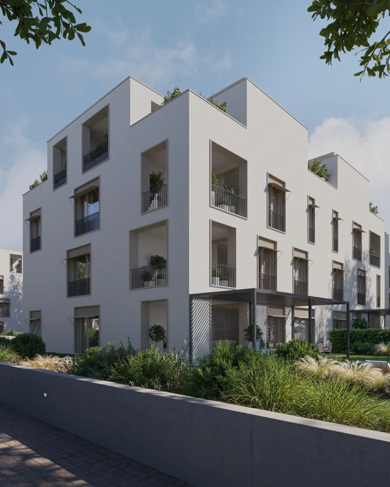
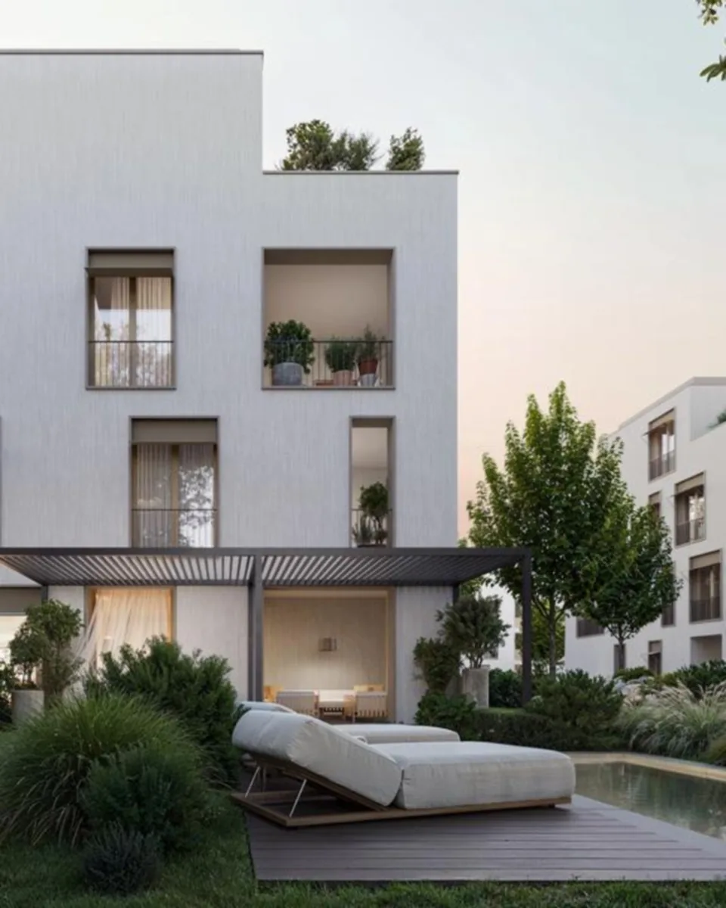
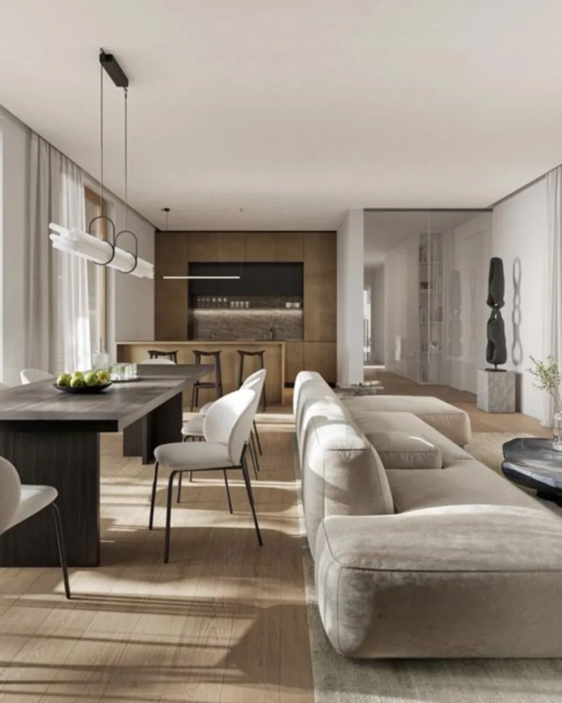
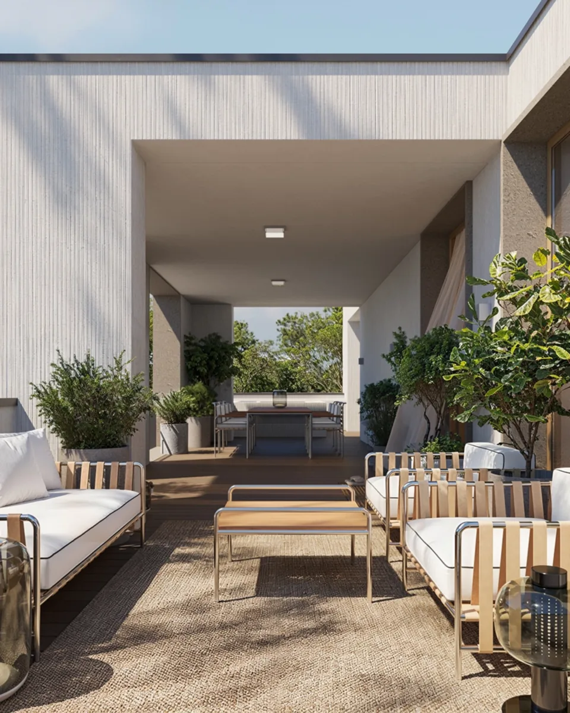

01
Butiková rezidence pro náročné
Sedm bytů v domě, žádné panelové řady. Adresa, kterou nesdílíte se stovkami sousedů.
Čtyři domy od CMC Architects vedle parku Ladronka. Klidný, soukromý svět, který se neukazuje, ale objevuje.
Sedm bytů v domě, žádné panelové řady. Adresa, kterou nesdílíte se stovkami sousedů.
Návrh CMC Architects — architektura, která nekřičí, ale drží kvalitu v každém detailu.
Vlastní zahrada i sousedství parku Ladronka — druhý domov, který dýchá.

Nadčasová fasáda CMC Architects, hluboké okenní niky a světlo, které se mění celý den.

Byty v přízemí mají rozlehlé soukromé zahrady. Snídaně venku a děti v trávě.

Vstup s ostrahou, garáže a vchody na kartu. Za branou jen vy a vaši blízcí.

Mezonety se saunou a vířivkou na vlastní střeše a s výhledem na Prahu.
Tradice, noblesa a klid prvorepublikové vilové čtvrti Břevnova. Nejdelší pražská in-line dráha, louky na piknik, golfové hřiště a veškerá vybavenost na dosah.
Objevte lokalitu→Ukážeme vám dispozice, vzorky materiálů i místo, kde vyroste vaše zahrada. Exkluzivní prodej Svoboda & Williams, Skokanská 6, Praha 6.